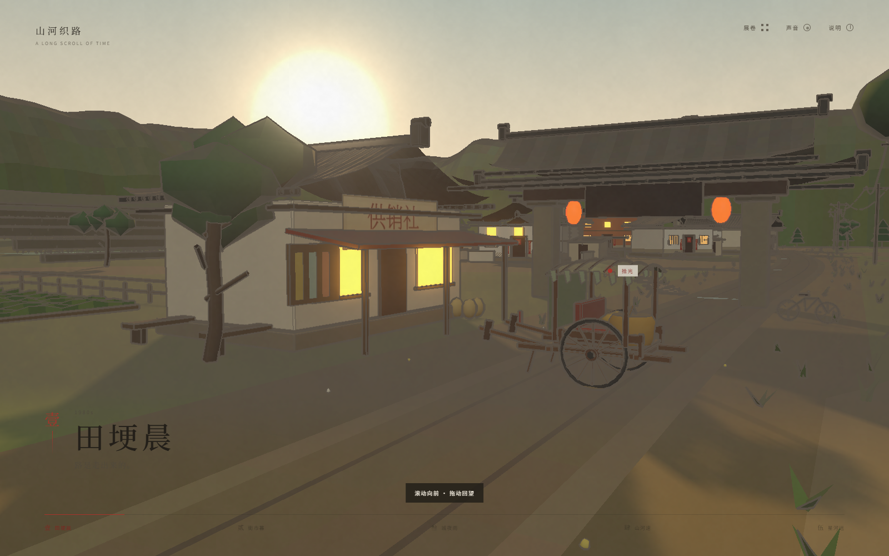

五幕
山河织路FIVE ISLANDS, ONE THREAD
五幕 · 时间在一条路上展开
每一幕都是一座 320m 见方的立体微缩景观：地形、建筑、植被、人物的痕迹与一件载具。五座岛悬在纸白虚空里，被同一根红线缝住。

壹
田埂晨
1980s · 村口
路是走出来的。
载具 / 人力车

贰
街市暮
1990s · 街心
路通向更大的世界。
载具 / 汽车

叁
城夜雨
2010s · 车窗
路把远方变成日常。
载具 / 绿皮火车

肆
山河速
2020s · 桥上
路让山河彼此相拥。
载具 / 高速动车

伍
星河远
未来 · 星海
路从脚下，通向星辰。
载具 / 重型火箭
从脚步到车轮，
从钢轨到星轨。路在变，方向没变。
从钢轨到星轨。路在变，方向没变。
五件载具人力车 · 汽车 · 绿皮火车
高速动车 · 重型火箭
高速动车 · 重型火箭
五种速度4 km/h · 60 km/h · 120 km/h
350 km/h · 逃逸速度
350 km/h · 逃逸速度
一条红线在纸白虚空中
把五座岛缝成一轴长卷
把五座岛缝成一轴长卷